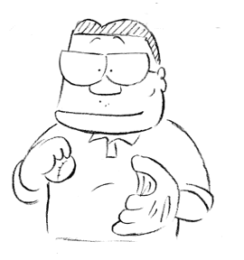

制作日誌 1999年5月
99.5.2（日）
・田町のMITスタジオに大阪から何人もの役者さんに来てもらい、アフレコが行われる。終了後、効果の伊藤さんに来てもらい、そのまま今後のSE作業のスケジュール調整が行われる。定尺が出ないと作業が進められないとする伊藤さんの意見を受け、明日編集の瀬山さんにジブリに来てもらって、出来るものから定尺を出していくことに。
・今日はほとんどのスタッフが出勤しているにも関わらず、仕出し弁当屋がお休みのため、夕食に会社からピザとすしの差し入れがある。
99.5.3（月）
・鈴木プロデューサーが今まであった机をどかし、コンピュータと共に金魚鉢に引きこもるため、石井君が吉祥寺でパソコンラックを購入し組み立てるも、組み立てると金魚鉢の入り口に入らないことが発覚、慌ててばらしていた。因に、今までのプレジデント席にはＰＤ室長野中氏が鎮座し「貫録があってまるで普通の会社のようだ」と周囲の評判は上々。ってことは今までいた鈴木プロデューサーは…。
・夕方瀬山さんが来社し、アビッドにてチェックを行う。シーン7-7までほぼ定尺がでる。
・今日も弁当屋さんが休みのため、会社からサブウェイのサンドイッチとケンタッキーフライドチキンが支給される。
99.5.4（火）
・田町のMITスタジオにて子供たちが主のアフレコが行われる。オーディションテープを聞いたときから「天才少年現る」と劇中に登場する迷子の役を演じる小松崎雄太君がお気に入りだった高畑監督。実際に会ってみても天才ぶりを発揮する小松崎君に絶賛の嵐。ぐずって何も言わないかと思えば、絵が画面に出た途端完ぺきな演技を見せたりと、高畑監督や鈴木プロデューサーもハラハラドキドキ。
99.5.5（水）
・今日から音響監督若林さんがジブリに出社し、アビッドを使って、取り込んであったセリフをチェック。
99.5.6（木）
・夕方から新入社員が徳間社長と会食。たらふく食べてきたらしい。
・５月後半に怒濤のごとく動画を消化すべく、石井が各外注動画さんにお願いの電話をかける。返答は上々。ありがたやありがたや。
・今日から再び全国行脚。昨夜1時ころ家に帰ったと思ったら、朝6時半には新幹線に乗るべく東京駅へ出発。今日は松竹関西支社の池方さんと大阪の映画館、道頓堀東映パラス、千日前国際劇場、池田中央（実はここ、池方さんの実家）、梅田松竹会館をまわる。大阪のなんとも明るくヒットさせようと頑張っている姿にこちらもやる気になってくる。大阪泊。
99.5.7（金）
・演助見習いの奥村、宮地がダビング用台本の校正作業にはいる。
・深夜遅くまで、高橋部長と神村デスクが今後の方針について熟考を重ねている。その後、二人で演出田辺さんの席へ。一体なにが伝えられたのか。
・今日は関西支社の藤田さんと、東大阪市のラインシネマ、橿原市の橿原シネアークの建築現場（7月末オープン予定）、近鉄百貨店の百人劇場、奈良のシネマデプト友楽、奈良地下劇場を訪問。奈良は社員旅行以来だが、劇場は両館とも、泊ったホテル猿沢のすぐ近く。ああ懐かしい。と感傷にふける間もなく東京へ。
99.5.8（土）
・瀬山さん来社。高畑さん、鈴木プロデューサーらと、アビッドから出した映像をバーのプロジェクターで映写。全体的なチェックを行う。
・外注回り途中の石井くんと斉藤君が、なぜか道を間違えて関越自動車道を所沢までドライブ。本人達がまず心配したのは、高速料金だとか。貧乏…。斉藤君の名誉のために書くが運転していたのは石井君。
99.5.9（日）
・いつも米の一粒も残さないデスク神村氏の弁当が、一口手をつけただけで放置されている。身も心も削りながら仕事をする神村氏。ポツンと置かれた弁当箱を見ていると、こみ上げてくるものがある。
・明日の飛行機で北海道に旅立とうと準備をしていると、なんと劇場を写すためのカメラを会社に忘れたことが発覚。車で取りに、と思ったら、早く寝るため先程ビールを一気飲みした後。仕方がないので、石井、斉藤両氏に自宅へ届けてもらう。感謝。
99.5.10（月）
・稲城さんが矢野さんの録音に立ち会うために行っていたニューヨークから帰国。時差ボケであたまが全然まわらない、とやつれた顔でたまった仕事を片づけている。
・居村氏の下に付いている新人奥村氏が、自動車免許取得のため、欠勤。本当は先週行くはずだったのだが、前夜の結果が芳しくなかったらしく、今日に延期になったという訳。なぜ頼みたい仕事がある日に限って…と居村氏が嘆いている。
・またまた朝のラッシュをくぐり抜け、松竹関東支社長の久我さん、テレマン神山氏と朝の羽田空港から北海道旭川空港へ（実は私は旭川生まれ）。旭川国民劇場を訪ね、その日本最北端にある劇場名寄電気館へ。なんと大正五年から続いている劇場と聞いてびっくり。約二時間半電車に乗って札幌へ。札幌SY遊楽に立ち寄り今日は実家で宿泊。
99.5.11（火）
・日本テレビ氏家氏が来社、それと共に、追い込み激励パーティーがジブリバーと二馬力に分かれて行われる。昼過ぎから社内はタキシードに身を包んだウェイターから寿司職人がかけずり回り騒然とする。
・取材が数件入ると共に、各部署の主要メンバーが新会議室でカメラのフラッシュに包まれていた。
・制作石井君の嫉妬する顔（彼は何十カ国も回ったことのある旅行好き）を思い浮かべながら、特急オホーツクに乗り、4時間半かけて北見へ。北見東急デパート内にある109劇場に寄ろうと思ったが休みだったので、営業宣伝を行っている北見中劇の方へ。今日はこれで終わり。
99.5.12（水）
・高畑監督に取材が入る。知らずにラッシュの予定を立てていたデスク神村氏があわてて変更報告に駆け回っていた。
・デスク神村氏の命により、石井氏が特大の残り原画カウントダウンバナーを作成する。ちなみに、最初はＡ４一杯に印刷していたのだが、神村氏の「小さい小さい！！」の言葉に、急遽用紙を継ぎ足し、嫌みな程大きなものが壁にでかでかと張り出されることになる。
・朝から三時間かけて釧路へ。釧路テアトルスガイに寄り、今度は約二時間がかりで帯広へ（私は30年ほど前帯広幼稚園に通っていた）。やはり北海道は広い。ここでは帯広グランドシネマ・テアトルポニーに寄る。帯広空港から東京へ。
99.5.13（木）
・今年のアメリカアカデミー賞短編アニメーション部門のオスカーを獲得したCGアニメ「BUNNY」を作ったスタッフが35mmフィルムを持って来社。社内を見学後、スタッフが集まり、出来たばかりの試写室で上映会が行われる。その後二馬力で予定時間を1時間以上もオーバーし、宮崎監督と様々な議論を行う。
・7時から高畑監督が、サウンドINにて「ケセラセラ」の生楽器部分の録音に立ち会う。
99.5.14（金）
・深夜、動画担当１人につき一体何枚あげれば良いのか計算し、この状況を作画部全体に把握してもらうため、制作部で残りの必要動画枚数を計算。
・朝のスーパーあずさにて甲府に向けて出発。平日なので自由席でいいや、と気楽に考えていたら、ビジネスマンで満員。座れずに立って甲府まで行く羽目に。甲府で武蔵野シネマファイブ、テアトル甲府を訪問し、岡谷市の岡谷スカラ座、松本市のエンギザ、長野市の長野ロキシーに立ち寄り長野泊。
99.5.15（土）
・午後、動検舘野さんと制作部で動画部全員へ最後のラストスパートへのお願いをする。
・今日は上田市の上田でんき館、佐久市の佐久Amシネマ、飯田市のセンゲキシアターへ伺う。夜11時頃帰京。
99.5.16（日）
・演助助手の奥村、宮地の二人も最近は日曜日無し。出社してきた高橋さんが「休日なのにすごい人口密度だ」と一言。
・石井氏が金魚鉢に設置するプリンターを新宿へ買いにいく。
・朝早く出社してたまった仕事を整理。
99.5.17（月）
・制作部全員の体力が限界を迎えつつあるため、帰宅のローテーションを組むことになる。
・最近Ｔ2スタジオへの回収が宮地くんの担当になっているため、外の空気を吸うことが唯一の活力源だった石井氏が、隙を見て外出しようとしては居村氏に見つかり「オレだって外に出たいんだから」と待ったをかけられている。
・今日は飛行機で大館能代から秋田、岩手を回る予定になっているが、朝9時頃会社に寄ったら、居村君や斉藤君が必死で働いている。朝早くから、と思ったらヒゲがやけに濃い…。お疲れさま。という訳で大館市の大館中央劇場、大曲市の大曲月岡シネマ、秋田シネマ旭を訪問し、秋田泊。
99.5.18（火）
・あまりのリテークの多さに、居村氏が頭をかかえ、うずくまっている。よほど腹に据えかねたらしく、その夜の食事外出はいつになく長かった。
・今日は秋田から盛岡でバスを乗り換え、二時間かけて宮古市へ。宮古マリーンシネマで挨拶し、再び盛岡へ。盛岡ピカデリー、ルミエールを訪問し、盛岡泊。
99.5.19（水）
・午後より、バーにてラッシュチェックが行われる。
・今後予想される動画人員不足を考え、スタジオたくらんけに動画数カットお願いする。
・今日は盛岡から雨の中水沢市の水沢ロマンス、一関市の一関の一関シネプラザ、古川市の古川文化劇場を訪問する。夜帰京。因に、外回りでいない間の会社の様子はスパイのスパイ、制作石井氏に情報をお願いしている。
99.5.20（木）
・5時からフィルムのラッシュチェック、8時からプロジェクターでのチェックが行われる。一寸会社にいない間に次々とCUTが完成している。ちょっとした浦島太郎状態。
・松竹岩崎氏と共に松竹のインターネット担当、土井、荻谷両氏が来社。今後のインターネット補完計画を話し合う。
99.5.21（金）
・早稲田アバコスタジオにて、矢野顕子による音楽録音が行われる。高畑監督は終始ごきげんの様子。勿論仕上がった曲もすばらしい出来。
・今日は松竹佐藤さんと、千葉を目指して東京駅を出発。まず茂原シネマサンシャインへ。駅からタクシーで行ったは良いが、帰りはタクシーを捕まえることが出来ず、駅まで30分歩く羽目に。次にシネマコレクション東金、成東シネフェスタを訪問し、銚子で一泊。
99.5.22（土）
・浜町のテレビセンターにて、のぼる役五十畑迅人君の追加分アフレコが行われる。
・最近、制作斎藤氏が演助新人の奥村君に運転を教えるため、しげく外回りに出ているが、制作デスク神村氏は、ひたすら何事も起こらないことを祈り続けている。
・演助新人の三人に、新試写室において映写機の操作方法の講習が行われる。
・今日は朝一で銚子セントラルを訪問、その後WMCユーカリが丘を訪ね、夕方ジブリに帰還。
99.5.23（日）
・試写室のスピーカーコーンを慣らす為、向こう一ヶ月間24時間連続で音を流しつづけることになる。
・休日返上のスタッフへアイスクリームを差し入れるため、石井、斎藤の二人で何故か国分寺へ。
・原画が残り1CUTとなる。
99.5.24（月）
・タンゴの動きの参考に、柔道の足払いのビデオが欲しいとの声がかかり、斎藤、居村両氏がジブリ周辺のビデオ店を虱潰しに探し回るもみつからず。
・奥村、宮地、高橋の三人に、映写機の扱い方についての講習が行われる。
・サウンドインにて、音楽録音が行われる。
・体調不良のなか、朝の新幹線で雨の京都へ。松竹関西の藤田さんと美松映劇、京都松竹座を訪問し、約四時間で京都から名古屋へ。せっかく京都に来たのに…。名古屋泊。
99.5.25（火）
・ＧＡＺＯの取材、フジテレビアナウンサーの見学等、様々な人たちが入れ替わり立ち替わり出入りしている。
・仕上にカットをおろす際は、原則として着彩ボードを添えることになっているのだが、紆余曲折の末、現在はシーンごとにボードをおろしている為、制作がカットごとに確認できず、ボードがみつからないという事件が多発している。早速、対応策として現在仕上げにおりていない全てのカットのボードの所在を明らかにすることに。
・昨日の資料用の柔道のビデオを買い求めに、宮地君が水道橋の講道館まででかけ、世界選手権とオリンピックの試合ビデオをみつけてくる。
・松竹名古屋の坂本さんと朝9時前の急行列車で名古屋を出発、まずは伊賀上野へ。ジストシネマ上野、伊勢市の伊勢世界館、津市の津東映シネマ、白子のWMC鈴鹿を駆け足で回り再び名古屋泊。
99.5.26（水）
・5時からラッシュチェックあり。
・実線動画が残り一CUTとなる。
・坂本さん、同じく松竹名古屋宣伝部の山田さんと、名古屋駅前にあるピカデリー1，グランド6に。その後山田さんの運転する車で、中川区の中川シネマワールド、桑名市のWMC桑名、安城市の安城シネマワールド、岡崎市の岡崎劇場、豊橋市の豊橋ピカデリーを怒濤のごとく回り、夜の新幹線で東京へ。
99.5.27（木）
・夕方動画の篠原さん宅へ電車で回収に行った斉藤君と奥村君。帰ろうと思ったら、強風により架線にビニルが引っ掛かったとかで中央線がストップ。仕方がないので電車が動くまで、と小金井方向へ歩き始めるも、阿佐谷まで来ても電車は動く気配なし。二人は力尽きてジブリにSOSのTEL。車で回収となる。
・8時からフィルムとプロジェクターによるラッシュチェックが行われる。
99.5.28（金）
・ようやく定尺が決まったと思ったら、高畑監督の要望でタンゴシーンが一秒長くなることに。早速、テレセンに詰めている若林さんに連絡を取り、これが最後の条件で納得して頂く。
・群馬県太田市にある太田コロナシネマワールドを訪問。夕方ジブリに出社。演助新人高橋氏と共にHP劇場紹介作業のラストスパート。
99.5.29（土）
・お茶の水で、来年度新卒者の共同進学説明会に参加する。
・テレセンにて、高畑監督が立ち会い、効果音のチェックが行われる。その際、総尺は合っているのに、どうしても絵と台詞が合わないカットがあることが判明。終日原因はわからず。
・夜10時より、プロジェクターのラッシュチェックが行われる。
・最近夜鳴きそばが毎日のようにジブリに現れているが、近ごろは予め電話連絡があってから来るようになっている。
99.5.30（日）
・昨日のコマズレの問題で、古城氏が各カットのコマ数をテレセンに送り、照合を依頼したところ、ある一カットの最後を切り忘れ、次のカットで帳尻を合わせていた事が原因と判明。早速修正する。
99.5.31（月）
・赤坂三分坂スタジオにて中村玉緒さんのアフレコが行われる。中村さんと高畑監督の30分にわたる濃厚なリハーサルの甲斐あって大満足の内に終了。
・今日は茨城県方面へ。まずは、竜ケ崎市の竜ケ崎シネマパラダイスを訪問。次に土浦市の土浦ピカデリー、石岡市の石岡パレットシネマ、水戸市の水戸パンテオン、水戸リードシネマ、日立市の日立シネフェスタと回り、夜東京へ。
| 次のページへ |
| 日誌索引へ戻る |